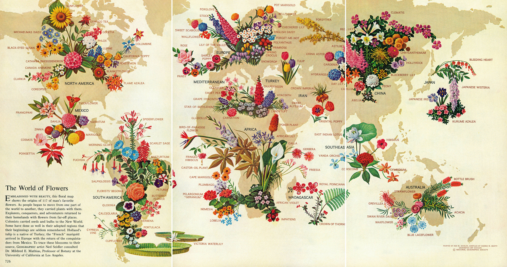

This map re-creates an original National Geographic map by Geographic artist Ned Seidler with consultation by Dr. Mildred E. Mathias, Professor of Botany at the University of California Los Angeles. This map was created in the Scripting Civic Engagement seminar at the University of Virginia (Fall 2017), taught by Andrea Hansen Phillips.
The World of Flowers - National Geographic, May 1968
Map data courtesy of Mapbox Studio and National Geographic
For questions or to improve this map, contact Pia von Barby, MLA 2018